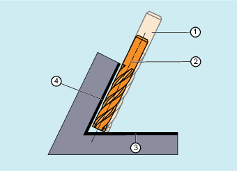
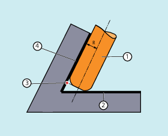

Der Werkzeugtyp (Werkzeugparameter $TC_DP1) wird ausgewertet. Es sind nur Fräswerkzeuge mit zylindrischem Schaft (Zylinder- oder Schaftfräser, Torusfräser und als Grenzfall der zylindrische Gesenkfräser) zugelassen. Das entspricht den Werkzeugtypen 1 - 399 mit Ausnahme der Nummern 111 und 155 bis 157.
Die Eckenverrundung des Normwerkzeugs wird durch den Werkzeugparameter $TC_DP7 beschrieben. Aus dem Werkzeugparameter $TC_DP16 ergibt sich die Abweichung der Eckenverrundung des realen Werkzeugs gegenüber dem Normwerkzeug.
Beispiel: Torusfräser mit verringertem Radius gegenüber dem Normwerkzeug
Werkzeugtyp | Schaftradius (R) | Eckenradius (r) |
|---|---|---|
Normwerkzeug mit Eckenverrundung | R = $TC_DP6 | r = $TC_DP7 |
Reales Werkzeug mit Eckenverrundung Werkzeugtypen 121 und 131 Torusfräser | R' = $TC_DP6 + $TC_DP15 + OFFN | r' = $TC_DP7 + $TC_DP16 |
In diesem Beispiel sind sowohl $TC_DP15 + OFFN als auch $TC_DP16 negativ.
Wird ein Werkzeug verwendet, welches im Vergleich zum passenden Normwerkzeug einen kleineren Radius aufweist, dann wird ein in Längsrichtung zugestellter Fräser soweit weiter geführt, bis dieser den Taschenboden wieder berührt. Damit wird die Ecke, die von der Bearbeitungs- und der Begrenzungsfläche gebildet wird, so weit ausgeräumt, wie dies das Werkzeug zulässt. Es handelt sich dabei um eine gemischte Bearbeitungsweise aus Umfangs- und Stirnfräsen. Analog zu einem Werkzeug mit verringertem Radius, wird beim Werkzeug mit vergrößerten Radius in die entgegengesetzte Richtung entsprechend zugestellt.
① | Normwerkzeug |
② | Werkzeug mit kleinerem Radius zugestellt bis zur Begrenzungsfläche |
③ | Begrenzungsfläche |
④ | Bearbeitungsfläche |
Gegenüber allen anderen Werkzeugkorrekturen der G-Gruppe 22 hat ein für CUT3DCCD angegebener Werkzeugparameter $TC_DP6 keine Bedeutung für den Werkzeugradius und beeinflusst die resultierende Korrektur nicht. Der Korrekturoffset ergibt sich aus der Summe des Verschleißwerts des Werkzeugradius (Werkzeugparameter $TC_DP15) und einem zur Berechnung des senkrechten Offsets zur Begrenzungsfläche programmierten Werkzeugoffset OFFN.
Ob die zu bearbeitende Fläche links oder rechts von der Bahn liegt, kann aus dem erzeugten Teileprogramm nicht entnommen werden. Es wird deshalb von einem positiven Radius und einem negativen Verschleißwert des Originalwerkzeugs ausgegangen. Ein negativer Verschleißwert beschreibt immer ein Werkzeug mit verringertem Durchmesser.
Bei der Verwendung von zylindrischen Werkzeugen ist eine Zustellung nur dann erforderlich, wenn die Bearbeitungsfläche und die Begrenzungsfläche einen spitzen Winkel (kleiner als 90 Grad) bilden. Werden Torusfräser (Schaftfräser mit Eckverrundung) verwendet, dann erfordert dies sowohl bei spitzen als auch bei stumpfen Winkeln eine Zustellung in Längsrichtung des Werkzeugs.
Ist CUT3DCC mit einem Torusfräser aktiv, so bezieht sich die programmierte Bahn auf einen fiktiven Zylinderfräser gleichen Durchmessers. Der hieraus resultierende Bahnbezugspunkt ist bei Verwendung eines Torusfräser im folgenden Bild dargestellt.
① | Torusfräser |
② | Begrenzungsfläche |
③ | Bahnbezugspunkt |
④ | Bearbeitungsfläche |
R | Schaftradius (Werkzeugradius) |
Es ist zulässig, dass der Winkel zwischen Bearbeitungs- und Begrenzungsfläche auch innerhalb eines Satzes von einem spitzen in einem stumpfen Winkel oder umgekehrt übergeht.
Gegenüber dem Normwerkzeug darf das verwendete reale Werkzeug sowohl größer als auch kleiner sein. Dabei darf der resultierende Eckenradius nicht negativ werden und das Vorzeichen des resultierenden Werkzeugradius muss erhalten bleiben.
Bei CUT3DCC bezieht sich das NC-Teileprogramm auf die Kontur an der Bearbeitungsfläche. Es wird hierbei wie bei der herkömmlichen Werkzeugradienkorrektur der Gesamtradius herangezogen, der sich aus folgenden Komponenten zusammensetzt:
Werkzeugradius (Werkzeugparameter $TC_DP6)
Verschleißwert (Werkzeugparameter $TC_DP15)
Einem zur Berechnung des senkrechten Offsets zur Begrenzungsfläche programmierten Werkzeugoffset OFFN
Die Lage der Begrenzungsfläche wird aus folgender Differenz bestimmt:
Abmessungen des Normwerkzeugs - Werkzeugradius (WZ-Parameter $TC_DP6)
| Hinweis |
Bei Verwendung der Werkzeugradiuskorrektur CUT3DCC / CUT3DCCD in Kombination mit der lizenzpflichtigen Funktion "Advanced Surface" oder "Top Surface" sind die Einstellempfehlungen bezüglich "Advanced Surface" / "Top Surface" zu beachten! Zur Überprüfung der eingestellten Daten steht über das SIOS-Portal ein spezielles Prüfprogramme zur Verfügung. → |